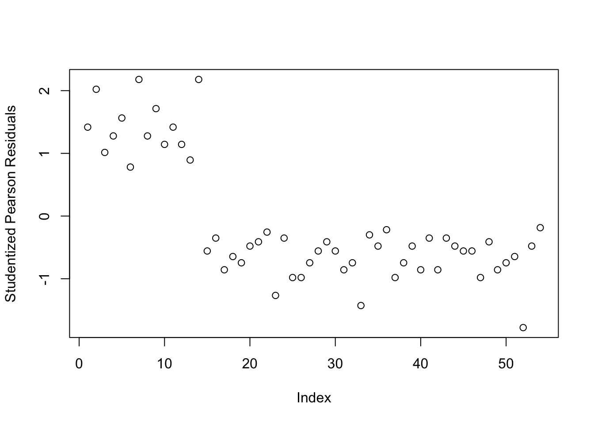
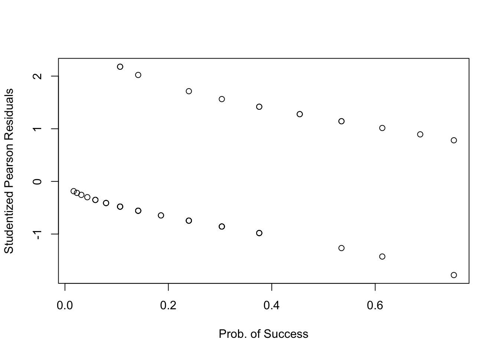
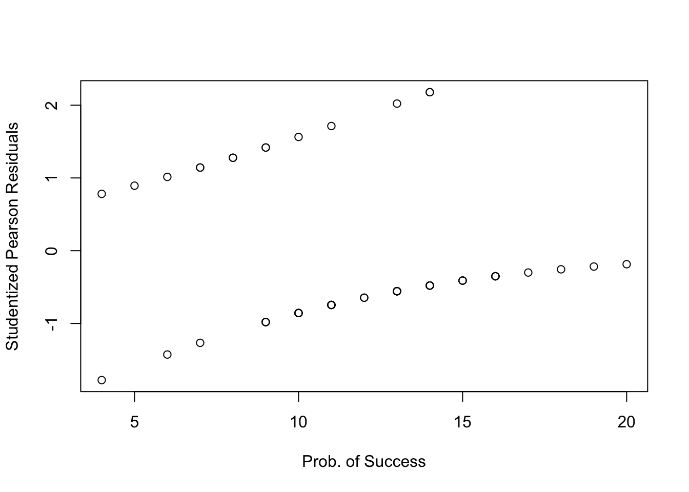
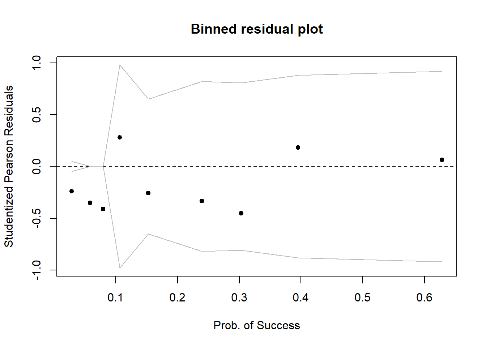
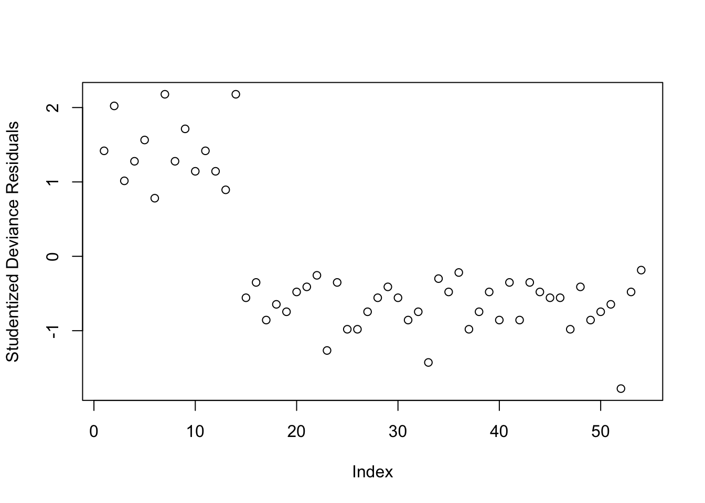
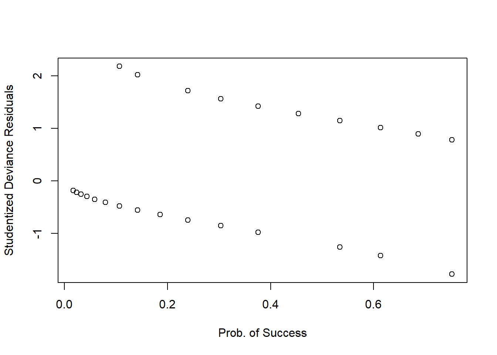
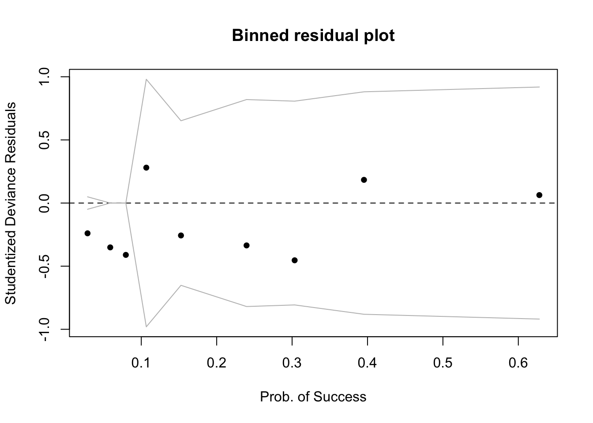
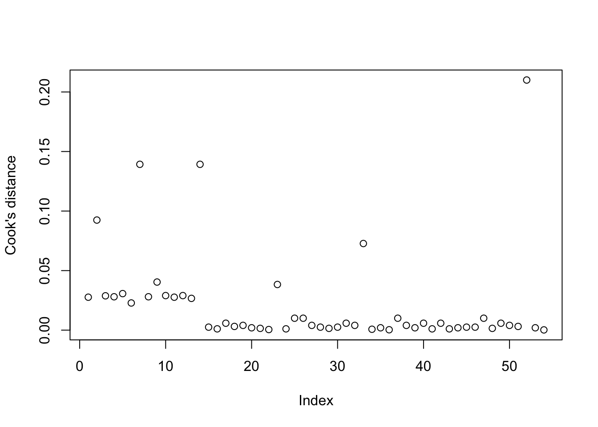

More About Logistic Regression
LEARNING OBJECTIVES
- Understand how to fit and interpret a logistic model
- Understand the difference between Pearson residuals and Deviance residuals
- Understand how to evaluate model fit
PREREQUISITES
Let \(A\) and \(B\) be two positive numbers:
\[ \begin{aligned} e^{A + B} &= e^A \times e^B \\ e^{\log(A)} &= A \\ \log \left( \frac{A}{B} \right) &= \log(A) - \log(B) \\ \log (A \times B) &= \log(A) + \log(B) \end{aligned} \]
Senility and WAIS
Research Question
Does the probability of having senility symptoms change as a function of the WAIS score?
A sample of elderly people was given a psychiatric examination to determine symptoms of senility were present. Other measurements taken at the same time included the score on a subset of the Wechsler Adult Intelligent Scale (WAIS). The data represent symptoms of senility (senility = 1 if symptoms are present and senility= 0 otherwise) and WAIS scores (wais) for \(n = 54\) people.
You can download the data at following link: https://uoepsy.github.io/data/SenilityWAIS.csv
Read in the ‘SenilityWAIS’ data, look at the head(), and plot (via ggplot()) the relationship between wais and senility.
Hint: In ggplot(), make sure you use geom_jitter() rather than geom_point() otherwise we will have multiple points on top of each other as there are multiple individuals with the same wais’ values.
Since we are interested in understanding how the probability of having senility symptoms changes as a function of the WAIS score, the response variable is \(y\) = senility and the predictor (or explanatory variable) is \(x\) = wais.
Fit the following logistic regression model: \[ \log \left( \frac{p_x}{1-p_x} \right) = \beta_0 + \beta_1 \ x \] where \(p_x = P(y = 1)\) is the probability that \(y = 1\) for an individual with WAIS score equal to \(x\).
Interpretation of coefficients
To interpret the fitted coefficients, we first exponentiate the model: \[ \begin{aligned} \log \left( \frac{p_x}{1-p_x} \right) &= \beta_0 + \beta_1 x \\ e^{ \log \left( \frac{p_x}{1-p_x} \right) } &= e^{\beta_0 + \beta_1 x } \\ \frac{p_x}{1-p_x} &= e^{\beta_0} \ e^{\beta_1 x} \end{aligned} \]
and recall that the probability of success divided by the probability of failure is the odds of success. In our example, this would be the odds of showing senility symptoms. \[ \frac{p_x}{1-p_x} = \text{odds} \]
Intercept
\[ \text{If }x = 0, \qquad \frac{p_0}{1-p_0} = e^{\beta_0} \ e^{\beta_1 x} = e^{\beta_0} \]
That is, \(e^{\beta_0}\) represents the odds of having symptoms of senility for individuals with a WAIS score of 0.
In other words, for those with a WAIS score of 0, the probability of having senility symptoms is \(e^{\beta_0}\) times that of non having them.
Slope
\[ \text{If }x = 1, \qquad \frac{p_1}{1-p_1} = e^{\beta_0} \ e^{\beta_1 x} = e^{\beta_0} \ e^{\beta_1} \]
Now consider taking the ratio of the odds of senility symptoms when \(x=1\) to the odds of senility symptoms when \(x = 0\): \[ \frac{\text{odds}_{x=1}}{\text{odds}_{x=0}} = \frac{p_1 / (1 - p_1)}{p_0 / (1 - p_0)} = \frac{e^{\beta_0} \ e^{\beta_1}}{e^{\beta_0}} = e^{\beta_1} \]
So, \(e^{\beta_1}\) represents the odds ratio for a 1 unit increase in WAIS score.
It is typically interpreted by saying that for a one-unit increase in WAIS score the odds of senility symptoms increase by a factor of \(e^{\beta_1}\).
Equivalently, we say that \(e^{\beta_1}\) represents the multiplicative increase (or decrease) in the odds of success when \(x\) is increased by 1 unit.
Interpret the coefficients from mdl1.
Diagnosing model fit: Residuals
Unlike linear regression, logistic regression has 2 main types of residuals.
Pearson residuals
Deviance residuals
We will now discuss each in turn.
In addition, just like in linear regression, each of the above can be standardized or studentized. We won’t discuss how to standardize each of those as the formula is difficult, but the idea is to rescale the residuals to have unit variance, making them more useful to diagnose outlying observations.
Remember the difference?
\(i\)th standardized residual = residual / SD(residual)
\(i\)th studentized residual = residual / SD(residual from model fitted without observation \(i\))
What to look for
We use the standardized/studentized residuals to identify outliers. If a case has a standardized/studentized residual larger than 2 in absolute value, it is deemed an outlier.
Some authors prefer a more conservative threshold of 3, in absolute value. That is, outliers are cases with a residual smaller than -3 or larger than 3. This is because approximately 99% of the data should be between -3 and 3 for a standardized variable.
Pearson residuals
Pearson residuals are similar to the Pearson residuals you might remember from the chi-squared test in DAPR1, which compared Observed and Expected values, but in this case Expected means Predicted from the model: \[ Pres_i = \frac{Observed - Expected}{\sqrt{Expected}} \]
In logistic regression, this is \[ Pres_i = \frac{y_i - \hat p_i}{\sqrt{\hat p_i (1 - \hat p_i)}} \]
where
- \(y_i\) is the observed response for unit \(i\), either 0 (failure) or 1 (success)
- \(\hat p_i\) is the model-predicted probability of success
There is one residual per each case (row) in the dataset:
Pres <- residuals(mdl1, type = 'pearson')To see this, we can add a column to the data:
sen %>%
mutate(Pres = Pres)## # A tibble: 54 × 3
## wais senility Pres
## <dbl> <dbl> <dbl>
## 1 9 1 1.29
## 2 13 1 2.46
## 3 6 1 0.793
## 4 8 1 1.10
## 5 10 1 1.52
## 6 4 1 0.574
## 7 14 1 2.89
## 8 8 1 1.10
## 9 11 1 1.78
## 10 7 1 0.933
## # … with 44 more rowsThe standardized Pearson residuals (having zero mean and unit standard deviation) are obtained as follows:
SPres <- rstandard(mdl1, type = 'pearson')The studentized Pearson residuals (also having zero mean and unit standard deviation) are obtained as follows:
StuPres <- rstudent(mdl1, type = 'pearson')In the following, I will use the studentized residuals for the plots, but if you wish to, you can use the standardized ones.
First, we plot the studentized Pearson Residuals against their index, and we check whether there are any values larger than 2 in absolute value (that is larger than 2 or smaller than -2). Some people prefer to be strict and deem as outlier those greater than 3 in absolute value as most values should be within -3 and 3.
plot(StuPres, ylab = "Studentized Pearson Residuals")
Yes, there appear to be 3 residuals with a value slightly larger than 2 in absolute value. We will keep these in mind and check later if they are also influential points.
Warning: Don’t inspect this plot for patterns!!! In here you might think there is a curvilinear relationship, but there isn’t. The plot has this shape as the first 14 cases have a response = 1, while the remaining have a response = 0, hence the two different levels.
Plotting the (studentized) Pearson residuals against the fitted values1 or the predictor is not very informative in logistic regression as you can see below:
plot(fitted(mdl1), StuPres,
xlab = 'Prob. of Success', ylab = 'Studentized Pearson Residuals')
plot(sen$wais, StuPres,
xlab = 'Prob. of Success', ylab = 'Studentized Pearson Residuals')
We only inspect residuals plot to find cases with a residual which is smaller than -2 (-3) or larger than 2 (3).
Sometimes a binned plot 2 can be more informative, but not always! It works by combining together all responses for people having the same covariate \(x_i\) value, and taking the average studentized Pearson residual for those.
Before using this function, make sure you have installed the arm package!
arm::binnedplot(fitted(mdl1), StuPres,
xlab = 'Prob. of Success', ylab = 'Studentized Pearson Residuals')
There doesn’t appear to be any extreme residuals.
Deviance residuals
What does deviance mean? In logistic regression, deviance is a measure of deviation, discrepancy, mismatch between the data and the model. You can think of it as a generalisation of the terms making up the residual sum of squares in simple linear regression. Hence, the deviance measures misfit, badness of fit and so (as it was for the residual sum of squares) the smaller the better!
We get the deviance residuals (always one per case) as follows:
Dres <- residuals(mdl1, type = 'deviance')The standardized deviance residuals (zero mean and unit standard deviation) are obtained with
SDres <- rstandard(mdl1, type = 'deviance')And the studentized deviance residuals (zero mean and unit standard deviation) are found via:
StuDres <- rstudent(mdl1, type = 'deviance')Again, we check whether any residuals are larger than 2 or 3 in absolute value:
plot(StuDres, ylab = 'Studentized Deviance Residuals')
All fine!
Again, a plot against the fitted values or the predictors isn’t that useful in logistic regression…
plot(fitted(mdl1), StuDres,
xlab = 'Prob. of Success', ylab = 'Studentized Deviance Residuals')
plot(sen$wais, StuDres,
xlab = 'Prob. of Success', ylab = 'Studentized Deviance Residuals')
So we will check against a binned plot:
arm::binnedplot(fitted(mdl1), StuDres,
xlab = 'Prob. of Success', ylab = 'Studentized Deviance Residuals')
Again, it seems like everything is fine, no extremely high values.
Which residuals should I use???
Both! Compute both, and for visual exploration most of the time it’s fine to use the deviance residuals.
If you use standardized or studentized ones it’s easier to explore extreme values as we expect most residuals to be within -2, 2 or -3, 3.
If you do not provide the type = ... argument to the function residuals(), then it will use the Deviance residuals by default, and so will the functions rstandard() and rstudent()!
Influential values
In logistic regression we typically check for influential observations by checking if there are any of the 54 cases in the dataset that have a Cook’s distance greater than 0.5 (moderately influential) or 1 (highly influential):
plot(cooks.distance(mdl1), ylab = "Cook's distance")
None of the units in the dataset appears to have a Cook’s distance value greater than 0.5, hence there does not seem to be issues with influential points.
Diagnosing model fit
Drop-in-deviance test to compare nested models
When moving from linear regression to more advanced and flexible models, testing of goodness of fit is more often done by comparing a model of interest to a simpler one. The only caveat is that the two models need to be nested, i.e. one model needs to be a simplification of the other, and all predictors of one model needs to be within the other.
We want to compare the model we previously fitted against a model where all slopes are 0, i.e. a baseline model: \[ \begin{aligned} M_1 : \qquad\log \left( \frac{p}{1 - p} \right) &= \beta_0 \\ M_2 : \qquad \log \left( \frac{p}{1 - p} \right) &= \beta_0 + \beta_1 x \end{aligned} \]
The null hypothesis will be that the simpler model is a good fit, while the alternative is that the more complex model is needed.
In R we do the comparison as follows:
mdl_red <- glm(senility ~ 1, family = binomial, data = sen)
anova(mdl_red, mdl1, test = 'Chisq')## Analysis of Deviance Table
##
## Model 1: senility ~ 1
## Model 2: senility ~ wais
## Resid. Df Resid. Dev Df Deviance Pr(>Chi)
## 1 53 61.806
## 2 52 51.017 1 10.789 0.001021 **
## ---
## Signif. codes: 0 '***' 0.001 '**' 0.01 '*' 0.05 '.' 0.1 ' ' 1The above code shows the two fitted models
Model 1: senility ~ 1
Model 2: senility ~ waisAnd then reports the Residual Deviance of each model, 61.806 and 51.017 respectively. Remember the deviance is the equivalent of residual sum of squares in linear regression.
So, by adding the predictor \(x\) = wais to the model, we reduce our deviance from 61.806 to 51.017, i.e. we reduce it by 10.789. Is this reduction sufficient to be attributed solely to the contribution of the predictor, or could it just be due to random sampling variation? This is what the chi-squared test tells us!
The reduced model (\(M_1\)) has the slope set to zero \(\beta_1 = 0\). Its deviance is obtained by fitting a logistic regression model without any explanatory variables (but including a constant term). This deviance is found to be 61.806, with 53 degrees of freedom. The deviance statistic from a fit of the model with \(x\) = wais included is 51.017, with 52 degrees of freedom. The deviance dropped by 10.789, with a drop of one degree of freedom. The associated p-value from a chi-squared distribution with 1df is \(p = .001\).
There is strong evidence of an association between senility symptoms and scores on the Wechsler Adult Intelligent Scale.
Akaike and Bayesian Information Criteria
Deviance measures lack of fit, and it can be reduced to zero by making the model more and more complex, effectively estimating the value at each single data point. However, this involves adding more and more predictors, which makes the model more complex (and less interpretable).
Typically, simpler model are preferred when they still explain the data almost as well. This is why information criteria were devised, exactly to account for both the model misfit but also its complexity.
\[ \text{Information Criterion} = \text{Deviance} + \text{Penalty for model complexity} \]
Depending on the chosen penalty, you get different criteria. Two common ones are the Akaike and Bayesian Information Criteria, AIC and BIC respectively: \[ \begin{aligned} \text{AIC} &= \text{Deviance} + 2 p \\ \text{BIC} &= \text{Deviance} + p \log(n) \end{aligned} \]
where \(n\) is the sample size and \(p\) is the number of regression coefficients in the model. Models that produce smaller values of these fitting criteria should be preferred.
AIC and BIC differ in their degrees of penalization for number of regression coefficients, with BIC usually favouring models with fewer terms.
Check the AIC and BIC values for mdl_red and mdl1 - which model should we prefer?
In any case, it is important to realise that no criterion can be superior in all situations. Rather, have a look at multiple ones and see if they agree overall.
Less Guided Exercises
Kalkhoran et al. (2015) 3 investigated predictors of dual use of cigarettes and smokeless tobacco products. Although their original sample size was large (\(n\) = 1324), they were interested in running separate logistic regression analyses within subgroups. Most of the sample used only cigarettes. One of the smaller subgroups contained subjects who used both cigarettes and smokeless tobacco products (\(n\)=61). For this problem we focus on this smaller subgroup of dual cigarette and smokeless tobacco users. The dependent variable, Q, is whether the subject made an attempt to quit using tobacco products (0 = no attempt to quit; 1 = attempted to quit). There is one multi-category independent variable, intention to quit, I, with four levels: never intend to quit, may intend to quit but not in the next 6 months, intend to quit in the next 6 months, intend to quit in the next 30 days.
The data can be found at the following link: https://uoepsy.github.io/data/QuitAttempts.csv
| Variable | Description |
|---|---|
| S | Subject |
| Q | Quitting (0 = No attempt to quit; 1 = Attempted to quit) |
| I | Intentions to Quit (1 = Never intend to quit; 2 = May intend to quit but not in the next 6 months; 3 = Intend to quit in the next 6 months; 4 = Intend to quit in the next 30 days) |
Read the data into R.
Perform a preliminary exploratory analysis of the data by computing summary statistics and visualising the distribution of the variables.
Fit a logistic regression of Q on I using ordinary logistic regression.
Be sure to treat the independent variable I as categorical rather than as continuous in these analyses (hint: you will need to make sure R will create for you dummy variables for each level of I, rather than treating it as numeric).
What do you observe from the results?
Interpret the coefficients in the context of the study. You might want to provide confidence intervals for the estimates!
Investigate whether or not the studentized deviance residuals raise any concerns about outliers.
Investigate whether or not there are influential observations.
Perform a Deviance goodness-of-fit test by compare the following nested models:
\[ \begin{aligned} M_1 &: \qquad \log \left( \frac{p}{1 - p}\right) = \beta_0 \\ M_2 &: \qquad \log \left( \frac{p}{1 - p}\right) = \beta_0 + \beta_1 I2 + \beta_2 I3 + \beta_3 I4 \end{aligned} \]
This is what you get with
plot(model, which = 1)↩︎Gelman, A., & Hill, J. (2006). Data Analysis Using Regression and Multilevel/Hierarchical Models (Analytical Methods for Social Research). Cambridge: Cambridge University Press. doi:10.1017/CBO9780511790942↩︎
Kalkhoran S, Grana RA, Neilands TB, and Ling PM. Dual use of smokeless tobacco or e-cigarettes with cigarettes and cessation. Am J Health Behav. 2015;39:277–284.↩︎